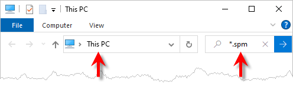

The selection of current post processors is displayed in the Set Post-Processor Options dialog shown below. You must select a Post from the Current Post-Processor dropdown menu. If for some reason you cannot locate your post in the menu list, it means one of two things:
1.Your post definition file has been moved and no longer resides in the folder where the Set Post-Processor Options dialog is looking.
2.The Set Post-Processor Options dialog is looking in the wrong folder for your post.
Either way, you need to keep track of where your post-processor definition file(s) are located. These post files are very valuable to you. Over time, you and/or MecSoft support has customized these post definition files to run specifically for your CNC machine controller. The list below provides some guidance on handling the post definition files.
•Always Know Where Your Post Files Are! •Do NOT Store Post Definition Files in Your Install Path! •When Editing a Post Definition: •When renaming a post definition file: |
Your post definition files will always the file extension of *.spm, such as Fadal-REV1.spm If you cannot locate your post, perform a Windows search from a file browser window and search for *.spm. The search results will span the current folder location - meaning that all files in the current folder are searched. To search your entire pc, navigate to My PC and enter *.spm in the search field as shown below.  Windows File Browser Search Bar |
In order for your CAM plugin to know where your post definition files are located, you need to make sure the Set Post-Processor Options dialog is looking in the correct folder. 1.From MecSoft CAM, go to the Machining Browser and select the Program tab. 2.Select the Post icon to display the Set Post-Processor Options dialog.
3.From the Set Post-Processor Options dialog, make sure Use Legacy Post is selected, then move down to where it says "Folder where post-processor files are located:
4.The current folder path is shown in the dialog. If this path is incorrect, select the
5.Use this dialog to locate the folder where you have placed your post definition files and then pick OK. 6.Now pick OK from the Set Post-Processor Options dialog. 7.Now repeat steps 1-3 above and you should see your post definition listed in the Current Post-Processor selection menu. |